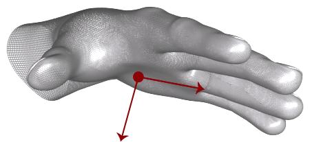

Hand¶
Properties:
Methods:
- Equals(Hand other)
- Finger(int id)
- Hand()
- Hand(long frameID, int id, float confidence, float grabStrength, float grabAngle, float pinchStrength, float pinchDistance, float palmWidth, bool isLeft, float timeVisible, Arm arm, List< Finger > fingers, Vector palmPosition, Vector stabilizedPalmPosition, Vector palmVelocity, Vector palmNormal, LeapQuaternion palmOrientation, Vector direction, Vector wristPosition)
- ToString()
The Hand class reports the physical characteristics of a detected hand.
Hand tracking data includes a palm position and velocity; vectors for the palm normal and direction to the fingers; properties of a sphere fit to the hand; and lists of the attached fingers.
Get Hand objects from a Frame object:
Frame frame = controller.Frame (); // controller is a Controller object if(frame.Hands.Count > 0){ List<Hand> hands = frame.Hands; Hand firstHand = hands [0]; }Note that Hand objects can be invalid, which means that they do not contain valid tracking data and do not correspond to a physical entity. Invalid Hand objects can be the result of asking for a Hand object using an ID from an earlier frame when no Hand objects with that ID exist in the current frame. A Hand object created from the Hand constructor is also invalid. Test for validity with the Hand::isValid() function.
Public Functions
- Since
- 1.0
Public Membersbool Equals(Hand other)Finger Finger(int id)The Finger object with the specified ID attached to this hand.
Use the Hand::finger() function to retrieve a Finger object attached to this hand using an ID value obtained from a previous frame. This function always returns a Finger object, but if no finger with the specified ID is present, an invalid Finger object is returned.
Finger fingerOnHandByID = hand.Finger (fingerID);Note that ID values persist across frames, but only until tracking of a particular object is lost. If tracking of a finger is lost and subsequently regained, the new Finger object representing that finger may have a different ID than that representing the finger in an earlier frame.
Hand()Hand(long frameID, int id, float confidence, float grabStrength, float grabAngle, float pinchStrength, float pinchDistance, float palmWidth, bool isLeft, float timeVisible, Arm arm, List< Finger > fingers, Vector palmPosition, Vector stabilizedPalmPosition, Vector palmVelocity, Vector palmNormal, LeapQuaternion palmOrientation, Vector direction, Vector wristPosition)Constructs a hand.
Generally, you should not create your own Hand objects. Such objects will not have valid tracking data. Get valid Hand objects from a frame received from the service.
- Since
- 3.0
- Parameters
- frameID -
Id of the frame this hand belongs to
- id -
The hand identifier
- confidence -
The estimate of data fitness
- grabStrength -
The grab posture rating of the hand
- grabAngle -
The average angle of the fingers to the hand
- pinchStrength -
The pinch posture rating of the hand
- pinchDistance -
The distance in millimeters between the thumb and index finger tips when pinching
- palmWidth -
the width of the hand
- isLeft -
True, if this is a left hand
- timeVisible -
The amount of time this hand has been visible
- arm -
The arm object for this hand
- fingers -
The list of fingers for this hand
- palmPosition -
The position of the palm
- stabilizedPalmPosition -
The time-filtered position of the palm
- palmVelocity -
The velocity vector of the hand
- Vector -
palmNormal The normal vector to the palm
- direction -
The direction of the hand
- wristPosition -
The position of the wrist
override string ToString()PropertyArm Arm
float Confidence
How confident we are with a given hand pose.
The confidence level ranges between 0.0 and 1.0 inclusive.
float confidence = hand.Confidence;
- Since
- 2.0
Vector Direction
The direction from the palm position toward the fingers.
The direction is expressed as a unit vector pointing in the same direction as the directed line from the palm position to the fingers.
You can use the palm direction vector to compute the pitch and yaw angles of the palm with respect to the horizontal plane:
float pitch = hand.Direction.Pitch; float yaw = hand.Direction.Yaw; float roll = hand.PalmNormal.Roll;
- Return
- The Vector pointing from the palm position toward the fingers.
- Since
- 1.0
List< Finger > Fingers
The list of Finger objects detected in this frame that are attached to this hand, given in order from thumb to pinky.
The list cannot be empty.
Use PointableList::extended() to remove non-extended fingers from the list.
// hand is a Hand object List<Finger> fingers = hand.Fingers;
- Return
- The List<Finger> containing all Finger objects attached to this hand.
- Since
- 1.0
float GrabAngle
The angle between the fingers and the hand of a grab hand pose.
The angle is computed by looking at the angle between the direction of the 4 fingers and the direction of the hand. Thumb is not considered when computing the angle. The angle is 0 radian for an open hand, and reaches pi radians when the pose is a tight fist.
- Return
- The angle of a grab hand pose between 0 and pi radians (0 and 180 degrees).
- Since
- 3.0
float GrabStrength
The strength of a grab hand pose.
The strength is zero for an open hand, and blends to 1.0 when a grabbing hand pose is recognized.
float strength = hand.GrabStrength;
- Return
- A float value in the [0..1] range representing the holding strength of the pose.
- Since
- 2.0
int Id
A unique ID assigned to this Hand object, whose value remains the same across consecutive frames while the tracked hand remains visible.
If tracking is lost (for example, when a hand is occluded by another hand or when it is withdrawn from or reaches the edge of the Leap Motion Controller field of view), the Leap Motion software may assign a new ID when it detects the hand in a future frame.
Use the ID value with the Frame::hand() function to find this Hand object in future frames:
Hand knownHand = frame.Hand (handID);
- Return
- The ID of this hand.
- Since
- 1.0
bool IsLeft
Identifies whether this Hand is a left hand.
string handName = hand.IsLeft ? "Left hand" : "Right hand";
- Return
- True if the hand is identified as a left hand.
- Since
- 2.0
Vector PalmNormal
The normal vector to the palm.
If your hand is flat, this vector will point downward, or “out” of the front surface of your palm.

The direction is expressed as a unit vector pointing in the same direction as the palm normal (that is, a vector orthogonal to the palm).
You can use the palm normal vector to compute the roll angle of the palm with respect to the horizontal plane:
float pitch = hand.Direction.Pitch; float yaw = hand.Direction.Yaw; float roll = hand.PalmNormal.Roll;
- Return
- The Vector normal to the plane formed by the palm.
- Since
- 1.0
Vector PalmPosition
The center position of the palm in millimeters from the Leap Motion Controller origin.
Vector handCenter = hand.PalmPosition;
- Return
- The Vector representing the coordinates of the palm position.
- Since
- 1.0
Vector PalmVelocity
The rate of change of the palm position in millimeters/second.
Vector handSpeed = hand.PalmVelocity;
- Return
- The Vector representing the coordinates of the palm velocity.
- Since
- 1.0
float PalmWidth
The estimated width of the palm when the hand is in a flat position.
float handWidth = hand.PalmWidth;
- Return
- The width of the palm in millimeters
- Since
- 2.0
float PinchDistance
The distance between the thumb and index finger of a pinch hand pose.
The distance is computed by looking at the shortest distance between the last 2 phalanges of the thumb and those of the index finger. This pinch measurement only takes thumb and index finger into account.
- Return
- The distance between the thumb and index finger of a pinch hand pose in millimeters.
- Since
- 3.0
float PinchStrength
The holding strength of a pinch hand pose.
The strength is zero for an open hand, and blends to 1.0 when a pinching hand pose is recognized. Pinching can be done between the thumb and any other finger of the same hand.
float pinch = hand.PinchStrength;
- Return
- A float value in the [0..1] range representing the holding strength of the pinch pose.
- Since
- 2.0
LeapQuaternion Rotation
The rotation of the hand as a quaternion.
- Since
- 3.1
Vector StabilizedPalmPosition
The stabilized palm position of this Hand.
Smoothing and stabilization is performed in order to make this value more suitable for interaction with 2D content. The stabilized position lags behind the palm position by a variable amount, depending primarily on the speed of movement.
Vector filteredHandPosition = hand.StabilizedPalmPosition;
- Return
- A modified palm position of this Hand object with some additional smoothing and stabilization applied.
- Since
- 1.0
float TimeVisible
The duration of time this Hand has been visible to the Leap Motion Controller.
float lifetimeOfThisHandObject = hand.TimeVisible;
- Return
- The duration (in seconds) that this Hand has been tracked.
- Since
- 1.0
Vector WristPosition
The position of the wrist of this hand.
- Return
- A vector containing the coordinates of the wrist position in millimeters.
- Since
- 2.0.3
LeapTransform Basis
The transform of the hand.
Note, in version prior to 3.1, the Basis was a Matrix object.
- Since
- 3.1
bool IsRight
Identifies whether this Hand is a right hand.
if (hand.IsRight) { // .. Do right handed stuff }
- Return
- True if the hand is identified as a right hand.
- Since
- 2.0
Extension Functions¶
public static Hand CopyFrom(this Hand hand, Hand source)¶
Copies the data from a source hand into this hand. After the operation is complete, the hand will be identical to the source hand.
Parameter: source The source hand that is copied into this hand.
public static Hand Transform(this Hand hand, LeapTransform transform)¶
Does an in-place, rigid transformation of this Hand.
Parameter: transform A LeapTransform containing the desired translation, rotation, and scale to be applied to this Hand.
public static Hand TransformedCopy(this Hand hand, LeapTransform transform)¶
Returns a new hand that is a copy of this hand, with an additional rigid transformation applied to it.
Parameter: transform The transformation to be applied to the copied hand.